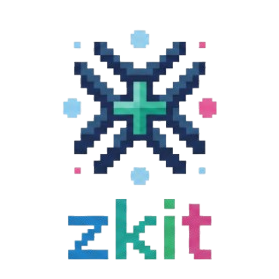

zkit documentation

IGA and TDSE-Z Toolkit
Developed by Dr. Zakaria Dahbi
Getting started
User guide
- Command-line interface
- Python API
- Input and output formats
- Wavefunctions
- Transition dipole moments
- Wigner and phase-space analysis
- Visualization
- Physics outputs
- Troubleshooting
import zkit.physicsfails withModuleNotFoundError: No module named 'sympy'import zkit.io.wfs_fieldoreigen.reconstruct()failsplot_wavefunction(..., vtk=...)failszkit.mwignerfails- Wavefunction reconstruction raises about missing
knots_* - HDF5 file not found or empty
- Slow norm or reconstruction for large grids
- PETSc MPI slowdown
- Wigner transform memory